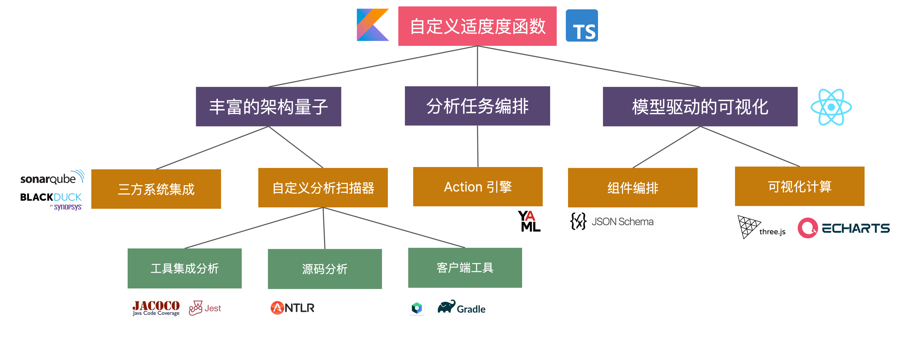

层次化分解
问题：如何将复杂的架构分解为更小的部分？
对于复杂的架构，我们需要将其分解为更小的部分，以便于理解和管理。
解决方案：层次化分解
示例: 基于 LVT 的企业架构分解？
参考文章：轻量级规划实践方法——精益价值树
一个典型的精益价值树，由愿景、目标、投注和举措及相应的成效度量（Measure of Success，简称MoS）构成。
- 最顶端是愿景，描述组织在实现成功的投资之后的未来理想状态，是组织的总体指导方向，所有投资都应为其做出贡献；
- 第二层是目标，描述组织达成愿景当前阶段所要达成的业务目标，体现组织的竞争策略和发展策略；
- 第三层是投注，描述为了达成某个目标，当前能想到的最好的点子或创意，是一个假设，有待验证和调整；
- 第四层是举措，定义为落实一个“投注”所要进行的具体行动，比如开发一个新的产品特性；接入一个新的合作方等。
- 目标、投注和举措上都需要有关键成效度量MoS，即业务相关的成效结果指标。
示例：从业务战略到实践
分为三层
- 业务战略目标。
- 架构原则。
- 设计和交付实践。
示例：
| 战略目标 | 架构原则 | 设计和交付实践 | |
|---|---|---|---|
| 赋能业务扩展 | 减少惯性 | REST 标准化 | |
| 支持进入新市场 | 消除偶然的复杂性 | 封装遗留系统 | |
| 支持已有业务创新 | 一致的接口和数据流 | 最小化依赖 | |
| 没有银弹 | .... |
示例：ArchGuard 3.0 LVT 示例
在设计 ArchGuard 3.0 的架构时，我们分解为：
